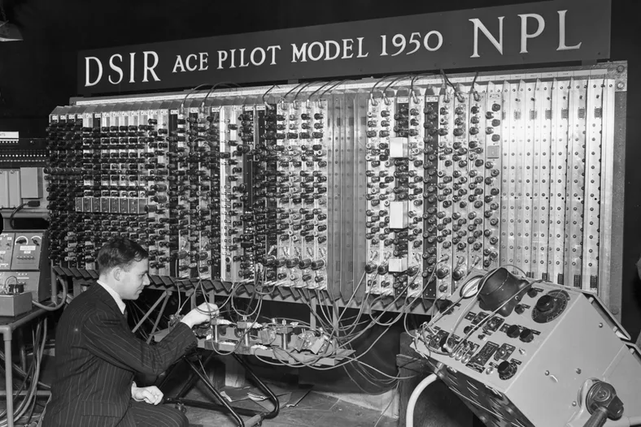
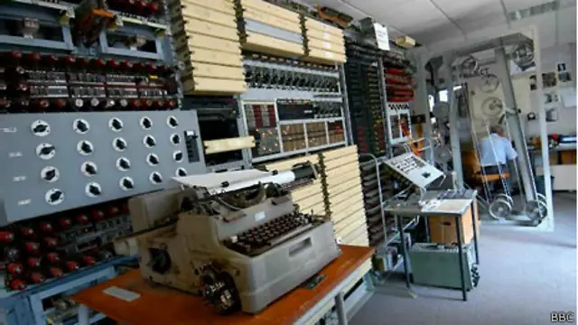
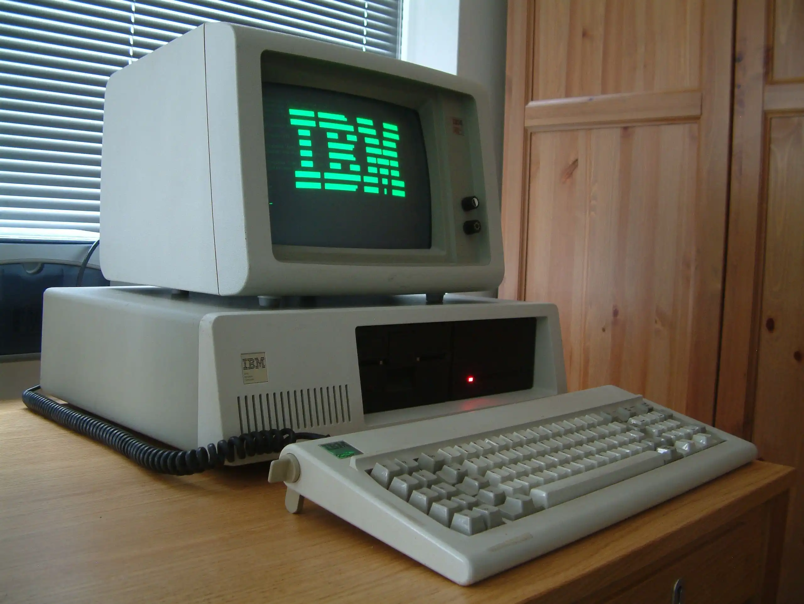

Línea de Tiempo - Historia de la Computación
Regresar
Inicio
Linea de Tiempo
Explorar
Quizz
Antes de 1980

1936
Alan Turing desarrolla el concepto de la Máquina de Turing.

1943
Se desarrolla el Colossus, la primera computadora programable.
1969
Nacimiento de ARPANET, la precursora de Internet.
Desde 1980 hasta Hoy

1981
IBM lanza la primera PC personal.
2007
Apple lanza el primer iPhone, revolucionando la industria móvil.